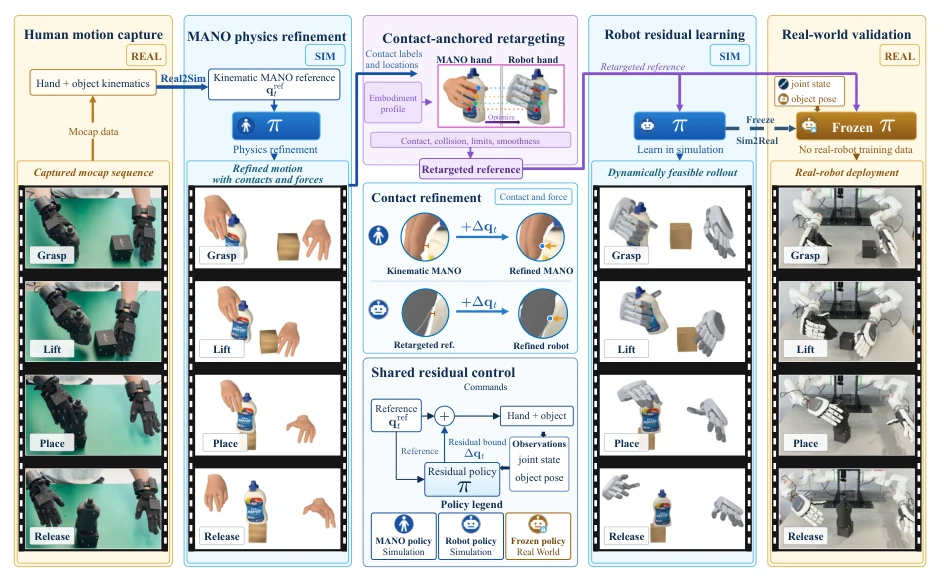
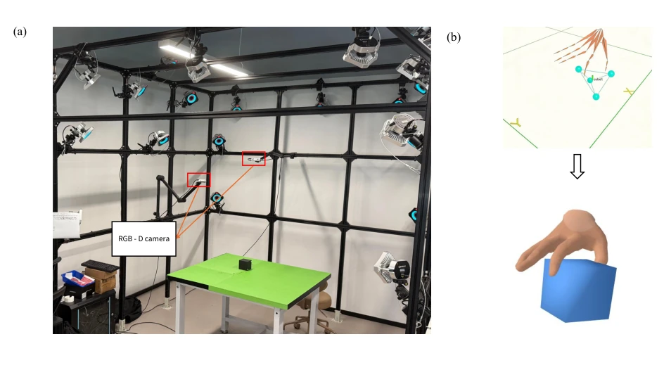
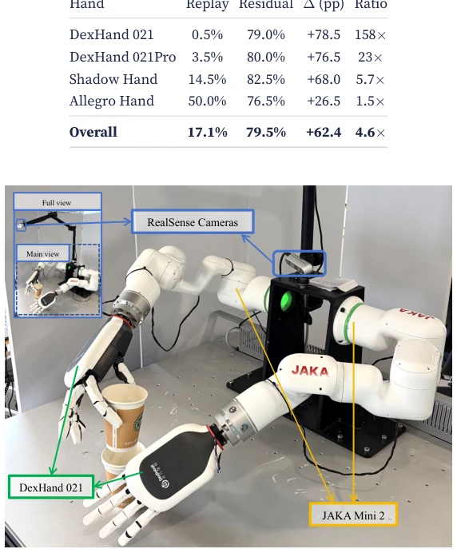
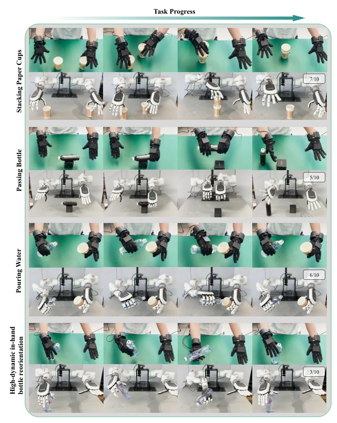
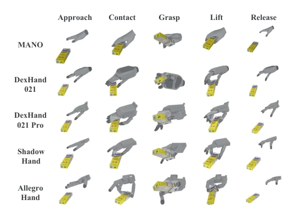

灵巧操作的核心在于手指与物体的精确接触，但现有数据源存在致命缺陷。遥操作（Teleoperation）虽为标准，但依赖熟练操作员且难以传递触觉反馈（Gao et al., 2025），视频数据虽易获取却丢失了关键的接触力信息（Zheng et al., 2026）。现有 real2sim2real 流水线通常将物理重建视为每任务工程，需为每个技能单独设计奖励函数和训练（Qin et al., 2022b; Zhao et al., 2025），导致扩展性差。此外，不同形态的手（embodiment）直接映射关节角度会失败（Qin et al., 2022a）。本文旨在通过识别“接触结构”作为可迁移内容，并利用单一残差策略解决物理一致性，从而在不依赖真机训练数据的情况下，实现从人类动捕到多形态机器人的技能迁移。
—
方法Method
整体流程分为三阶段。首先，Physics Refinement 利用 Isaac Gym 中的模拟 MANO 手，通过一个跨任务共享的残差 RL 策略（Residual RL Policy）重新执行动捕记录，恢复缺失的接触力和接触点标签，而非单纯跟踪关节轨迹。其次，Contact-Anchored Retargeting 将恢复的接触结构迁移到目标机器人手，优化目标不是关节角度，而是手指表面区域与物体接触点的几何匹配，这使得优化目标独立于手部形态。最后，Robot Residual Learning 引入第二个残差策略，针对机器人执行器的动力学限制（如扭矩、腱耦合）进行微调，恢复动态可行性。整个流程中，物理修正和动态恢复共享相同的残差控制公式，且无需真机训练数据，仅依赖仿真中的域随机化（Domain Randomization）实现 Sim2Real 迁移。
—

Figure 1. Pipeline overview. Human motion capture records hand and object kinematics at 120 Hz in a room‑scale mocap system. MANO physics refinement re‑executes the kinematic reference with a residual‑RL policy in simulation, recovering per‑frame contacts and forces (contact refinement insets). Contact‑anchored retargeting adjusts the robot hand so that the designated contact regions on its fingers reach the same object‑surface locations as in the human demonstration, transferring the contact pattern rather than copying joint angles. Robot residual learning restores dynamic feasibility via a second residual policy trained in simulation. Both sides share the residual control formulation. Real‑world validation freezes the policy and transfers it to physical hardware with zero real‑robot trai

Figure 2. Data capture and processing. (a) Room‑scale optical motion‑capture system with 22 infrared cameras and synchronized RGB‑D sensors. (b) Processing pipeline: raw mocap markers are pre‑processed into the MANO coordinate frame, fitted to the MANO hand model (Romero et al., 2017), and passed through physics simulation to obtain contact force annotations.
Figure 3. Dual‑hand evaluation grouped by task type (25 tasks, 250 trajectories, ±10% object‑size perturbation). Each row aggregates all tasks of a given type; Overall is the aggregate across all types. Gray: without residual correction; blue: with residual correction. Left: task‑level success rate; right: attempt‑level success rate.

Figure 4. Real‑world hardware setup: two 6‑DoF JAKA Mini 2 arms with DexHand 021 and two RealSense D435 cameras.

Figure 5. Real‑world execution of four tasks. Per task, the top row shows the human demonstration (green background) and the bottom row shows the robot execution, with time progressing left to right. From top to bottom: stacking paper cups (7/10), passing & standing a bottle (5/10), pouring water (6/10), and in‑hand bottle reorientation (3/10).

Figure 6. Cross‑embodiment residual policy execution. Four morphologically distinct hands (DexHand 021, DexHand 021Pro, Shadow Hand, and Allegro Hand) execute the same retargeted grasp‑and‑lift reference using the residual policy (Sec. 3.4). Snapshots show five phases: Start, Approach, Grasp, Lift, and Release.